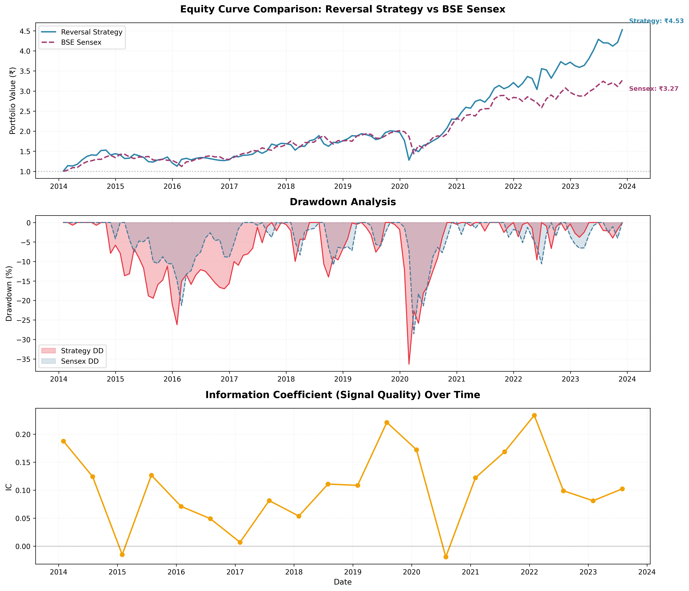

Reversal-Based Quantitative Strategy
A systematic equity reversal strategy implemented and evaluated using strict time-series discipline, walk-forward validation, and realistic trading assumptions.
Project Overview
This project explores whether short-term mean reversion signals can consistently outperform a broad market index when evaluated using realistic backtesting techniques. The strategy is based on the hypothesis that stocks which have underperformed in the recent past tend to exhibit short-term mean reversion, and dynamically selects the weakest-performing stocks using rolling historical data.
Dataset
- Historical monthly price data for Indian equities
- 12 years of data used (2 years required for rolling evaluation)
- Backtest period: 2014 – 2024 (10 years)
- Universe: BSE Sensex constituents (static universe)
- Universe filtered to stocks with continuous historical availability
Strategy Logic
The strategy ranks stocks based on reversal signals computed from prior returns. Each month, a portfolio is formed using the weakest-performing subset:
- 1-Month Reversal: Negative of 1-month returns
- 2-Month Reversal: Negative of 2-month returns
- 3-Month Reversal: Negative of 3-month returns
- 6-Month Reversal: Negative of 6-month returns
Stocks are ranked monthly using the reversal signal, and the bottom 20% of the universe (worst performers) is selected for the portfolio. The portfolio is rebalanced monthly with equal weighting.
Signal Validation & Selection
Signal selection follows a strict time-series validation protocol to avoid overfitting and look-ahead bias. Every six months, the strategy re-evaluates the optimal reversal lookback period using a rolling 24-month window:
- First 18 months --> signal evaluation
- Last 6 months --> out-of-sample validation
- Signal selection based on Information Coefficient (IC)
- Best-performing lookback applied to the next 6 months of live trading
Information Coefficient (IC)
The strategy uses IC to measure signal quality. IC is the Spearman rank correlation between the reversal signal and future returns. Higher IC indicates better predictive power:
- IC > 0.05 --> strong signal
- IC > 0 but < 0.05 --> weak signal
- IC < 0 --> poor signal (consider momentum instead)
Risk Controls & Assumptions
- Monthly rebalancing
- Transaction cost modeled at 0.2% per trade
- Equal-weighted portfolio construction
- No look-ahead bias or future leakage
- All decisions use information available at the time
- No explicit sector or volatility risk controls
Performance Results
CAGR: 16.45%
Index CAGR: 12.67%
Total Return (Strategy: 352.74%
Total Return (Index): 226.55%
Sharpe Ratio: 0.84
Index Sharpe: 0.83
Max Drawdown: -36.34%
The strategy demonstrates consistent performance driven by disciplined signal validation rather than aggressive parameter tuning. Performance is sensitive to market regime, with mean reversion working best in range-bound, volatile markets.
Evaluation Artifacts
The following plots were generated during backtesting:
- Equity curve comparison (strategy vs index)
- Drawdown analysis

Key Takeaways
- Simple reversal signals can generate alpha when validated correctly
- Mean reversion complements momentum in different market regimes
- Walk-forward validation is critical in financial ML
- IC-based signal selection prioritizes robustness over raw performance
- Contrarian strategies require discipline during drawdowns
Strategy Interpretation & Limitations
This reversal strategy is contrarian to momentum strategies, betting on market overreaction and subsequent recovery. Key considerations:
- Performance is sensitive to market regime (works best in ranging markets)
- Capacity constraints may apply for larger portfolios
- Static universe introduces survivorship considerations
- Short-term reversal may fade with higher transaction costs
- Requires patience during momentum-driven market phases